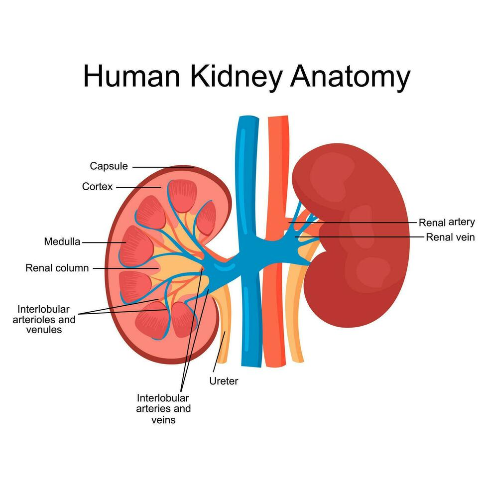
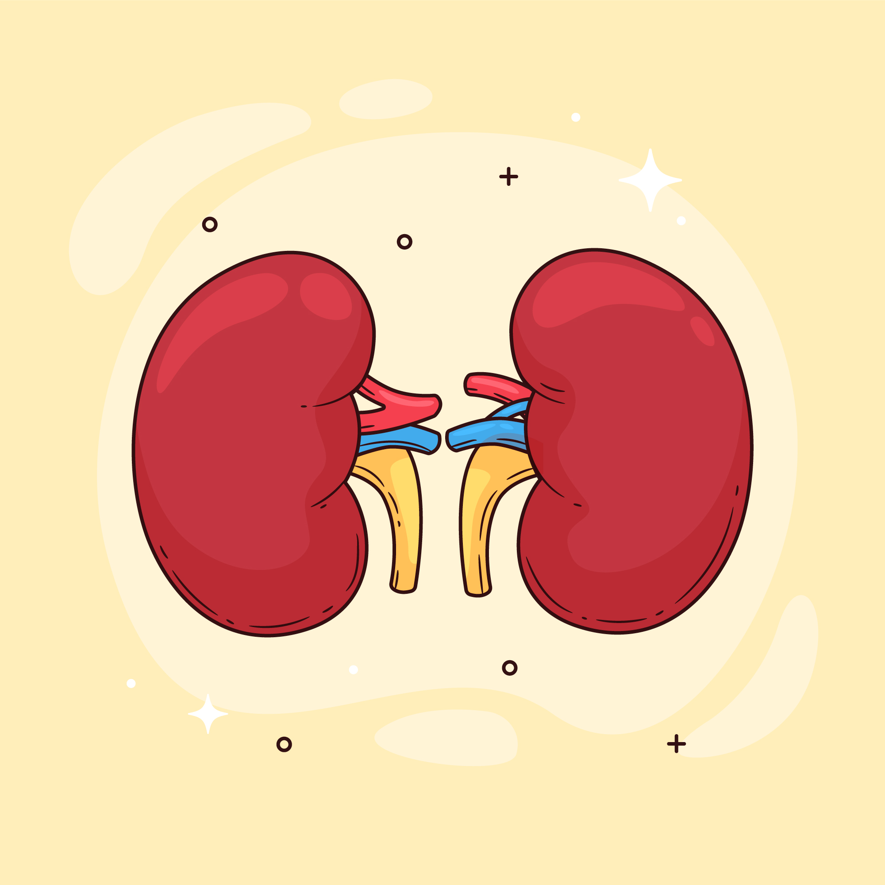

Kidney Functions:
Filtration of blood
Regulation of:
- Blood pressure
- pH
- Electrolyte balance
Hormone production:
- Erythropoietin
- Renin

Kidneys are a pair of bean-shaped organs located on either side of the vertebral column in the posterior abdominal cavity.

1. Shape: Bean-shaped
2. Size: ~10–12 cm long, 5–6 cm wide, 3 cm thick
3. Weight: 120–170 grams each
4. Surfaces:
Renal Artery → Segmental → Interlobar → Arcuate → Interlobular
Renal Vein → IVC
Renal Capsule → Cortex → Medulla → Minor & Major Calyces
From renal plexus. Sympathetic nerves regulate blood flow.